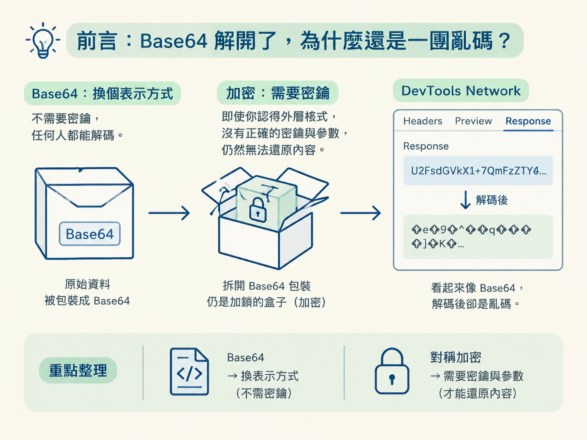
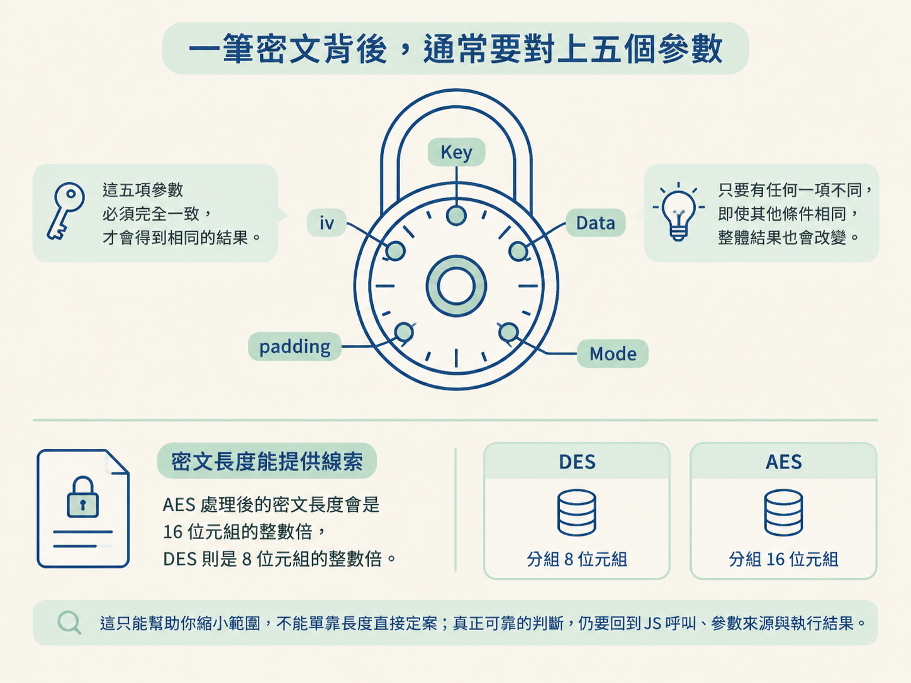
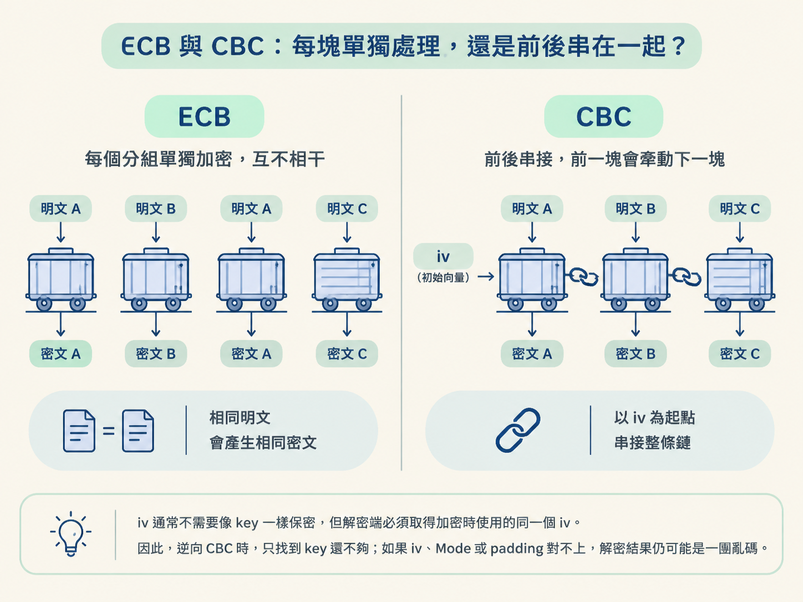
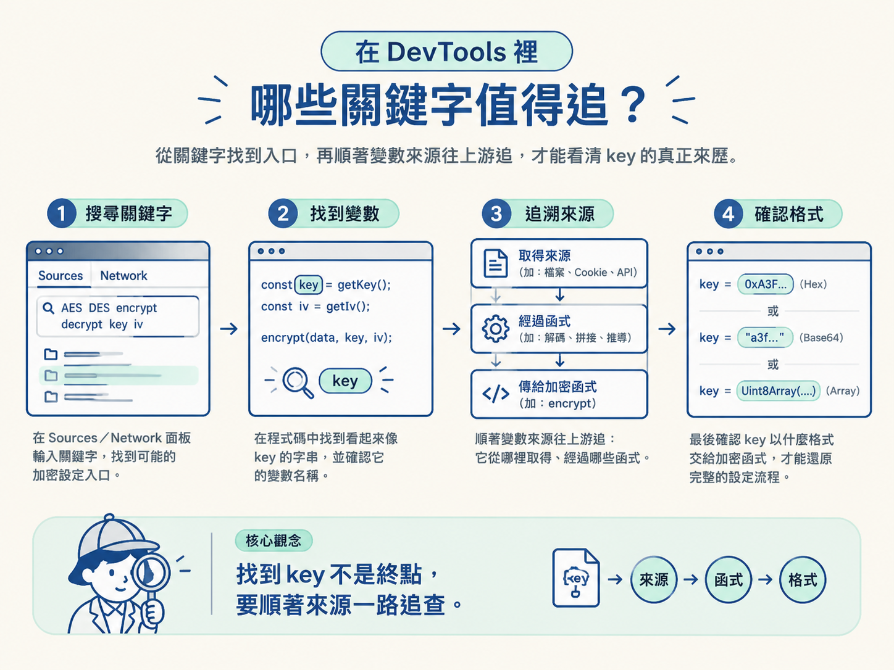

這一節會建立對稱加密的整體模型。學完後，你應該能說明為什麼加密與解密共用同一把 key，也能判斷 Key、Data、Mode、padding、iv 分別控制什麼，以及 ECB 與 CBC 有何差別。
抓取資料時，流程通常不是「送出請求、拿到內容」就結束。站台可能先用反爬機制限制請求，再把真正的資料加密。這時，工作就會從單純抓取一路走到逆向：先確認回應怎麼來，再找出資料經過哪些轉換，最後重現解密流程。
例如，你在 DevTools 的 Network 面板看到某個介面回傳 X/A0fy9S7+kUI3HYQRKO46WTlid6T1DBhXutwmPdboY=。它看起來像 Base64，但解碼之後，得到的不是可讀文字，而是一串二進位資料。這就像拆開一個包裹，裡面卻還有一只上鎖的盒子：Base64 只是外包裝，真正擋在裡面的可能是加密。
上一個節點提過，32 位且只包含 0-9a-f 的字串，常會讓人聯想到 MD5；由大小寫字母、數字與 + / = 組成，而且長度是 4 的倍數，則可能是 Base64。不過，這些外觀都只能當成線索，不能直接當成結論。
Base64 只是把資料換一種表示方式，不需要密鑰，任何人都能解碼。對稱加密則不同：即使你認得外層格式，沒有正確的密鑰與參數，仍然無法還原內容。因此，當 Base64 解碼後依舊不可讀，而且前端程式裡又出現 AES、DES、encrypt 或 decrypt，才適合沿著對稱加密的方向追查。

對稱加密之所以稱為「對稱」，是因為加密與解密使用同一把密鑰，也就是 key。明文用這把 key 加密成密文；要把密文還原，也必須使用同一把 key。
可以把它想成家用保險箱。鎖門與開門都靠同一把鑰匙，演算法則像保險箱內部公開的機械結構。AES、DES 的規則可以公開查到，真正必須保密的是鑰匙。
這也說明了逆向時真正要追的是什麼。通常不是去「破解 AES」或「破解 DES」，而是找出程式使用了哪一把 key，以及這把 key 搭配了哪些參數。只找到演算法名稱，就像只認出眼前是一只保險箱，離打開它還有一段距離。
DES 與 AES 都是分組密碼（block cipher）。它們不會逐字元處理資料，而是先把內容切成固定大小的區塊，再一塊一塊加密。
因此，在 DevTools 裡看到一段 CryptoJS.AES.encrypt 時，不要只盯著 key。要完整重現結果，通常還得一起確認 Data、Mode、padding 與 iv。這五項就像轉開密碼鎖時必須對準的五個刻度，其中一項不同，結果便可能完全不同。
| 參數 | 它是什麼 | 決定什麼 |
|---|---|---|
| Key（密鑰） | 加密與解密共用的資料 | 使用哪一把鑰匙，是對稱加密的機密核心 |
| Data（資料） | 這次要處理的內容 | 加密時是明文，解密時是密文 |
| Mode（模式） | 各個分組之間的處理方式 | 分組是否彼此關聯，以及是否需要 iv |
| padding（填充） | 補齊資料長度的規則 | 資料不足一個完整分組時，要如何補滿 |
| iv（初始向量） | 某些模式使用的起始值 | 為第一個分組提供起點；解密時必須使用相同的 iv |
先看 padding。分組密碼要求資料長度符合分組大小：DES 的分組是 8 個位元組，AES 的分組是 16 個位元組。如果明文長度不足，就必須按照指定的 padding 規則補齊，再交給演算法處理。
這也是為什麼密文長度可以提供線索。AES 處理後的密文長度會是 16 位元組的整數倍，DES 則是 8 位元組的整數倍。不過，這只能幫助你縮小範圍，不能單靠長度直接定案；真正可靠的判斷，仍要回到 JS 呼叫、參數來源與執行結果。

Mode 決定各個分組如何合作。理解 ECB 與 CBC 時，可以把一串資料想成一列火車車廂：ECB 讓每節車廂各走各的，CBC 則把前後車廂連起來，前一節的結果會影響下一節。
| 模式 | 分組關係 | 相同明文分組的結果 | 是否需要 iv |
|---|---|---|---|
| ECB | 每個分組獨立加密 | 會得到相同的密文分組 | 不需要 |
| CBC | 前一個密文分組會影響下一個分組 | 結果會受到前文與 iv 影響 | 需要 |
ECB 的做法最直接：每個分組獨立加密，再依序組合成完整密文。它容易理解，也少一個 iv 參數，但缺點很明顯。相同的明文分組會產生相同的密文分組，因此原始資料裡重複出現的結構，可能在密文中留下痕跡。
圖片是常見的對比案例。如果使用 ECB 加密，重複色塊會反覆產生相同結果，圖片輪廓可能仍隱約可見。也就是說，內容雖然被打亂，原本的圖案卻沒有完全藏好。因此，ECB 雖然簡單，安全性較弱。
CBC 會先把前一個密文分組與目前的明文分組做 XOR 運算，再進行加密。如此一來，每個分組都會受到前一塊影響，不再只是各自處理自己的內容。
第一個分組前面沒有密文可以接，所以 CBC 需要一個起點，這就是 iv，也就是初始向量。以 AES-CBC 為例，iv 的長度是 16 位元組。它不是用來取代 key，也不等於第二把密鑰；它的工作是為串接流程提供起點，讓相同明文搭配不同 iv 時，可以產生不同密文。
iv 通常不需要像 key 一樣保密，但解密端必須取得加密時使用的同一個 iv。因此，逆向 CBC 時，只找到 key 還不夠；如果 iv、Mode 或 padding 對不上，解密結果仍可能是一團亂碼。

一句話分辨：ECB 是「每塊各自加密」，所以相同明文分組會留下相同結果；CBC 是「前一塊牽動下一塊」，並使用 iv 作為第一塊的起點。
DES 的全名是 Data Encryption Standard，也就是資料加密標準；AES 則是後來用來取代 DES 的先進加密標準。兩者都是對稱式分組密碼，但分組大小與實務安全性不同。
這個差別會直接影響逆向判斷。當你在 JS 裡看到 CryptoJS.AES.encrypt，就知道程式正在使用 AES；如果看到 CryptoJS.DES，則要按照 DES 的分組大小與參數處理，不能直接套用 AES 的設定。
密文長度適合拿來提出假設，不適合拿來單獨下結論。尤其 16 的倍數同時也是 8 的倍數，只看長度可能同時符合 AES 與 DES。更穩妥的證據，是程式實際呼叫的函式、key 與 iv 的處理方式，以及重現後能否得到相同結果。
當介面回應解碼後仍不可讀，可以回到 DevTools，從請求發生的位置往前追。搜尋時，以下關鍵字常能幫你快速找到入口：
找到一個看起來像 key 的字串，並不代表工作已經完成。真實站台裡的 key 可能直接出現，也可能由其他資料生成、拼接或推導而來。這時不能只用眼睛掃過程式碼，而要順著變數來源往上游追：它從哪裡取得、經過哪些函式，最後又以什麼格式交給加密函式。

反過來說，如果內容只做了 Base64 編碼，或程式裡完全找不到加密呼叫，就不該硬套 AES 或 DES。先分清楚編碼、雜湊與加密，能避免拿錯工具，在錯誤方向上追很久。
對稱加密不是只找一把 key。完整模型是：Data 經過指定的演算法、Mode 與 padding 處理，某些模式還需要 iv，而加密與解密共用同一把 key。ECB 讓分組各自處理；CBC 讓前後分組互相牽動，並以 iv 作為起點。DES 的分組是 8 位元組，AES 則是 16 位元組；現代系統應優先使用 AES，但逆向舊站時仍可能碰到 DES。
把它放回整個流程來看：抓取先讓你拿到介面回應，反爬分析用來確認請求能否正常重現；當回應經過 Base64 解碼仍不可讀，而且前端確實存在 AES 或 DES 呼叫時，才進入對稱加密逆向。
接下來面對 crypto-js 的 AES 程式碼時，腦中要掛著這張參數地圖：不要只問「key 在哪裡」，還要一起確認 Data、Mode、padding 與 iv。下一節會把這套模型套進實際程式碼，逐項找出參數，再用 Python 的 pycryptodome 重現完全相同的密文。